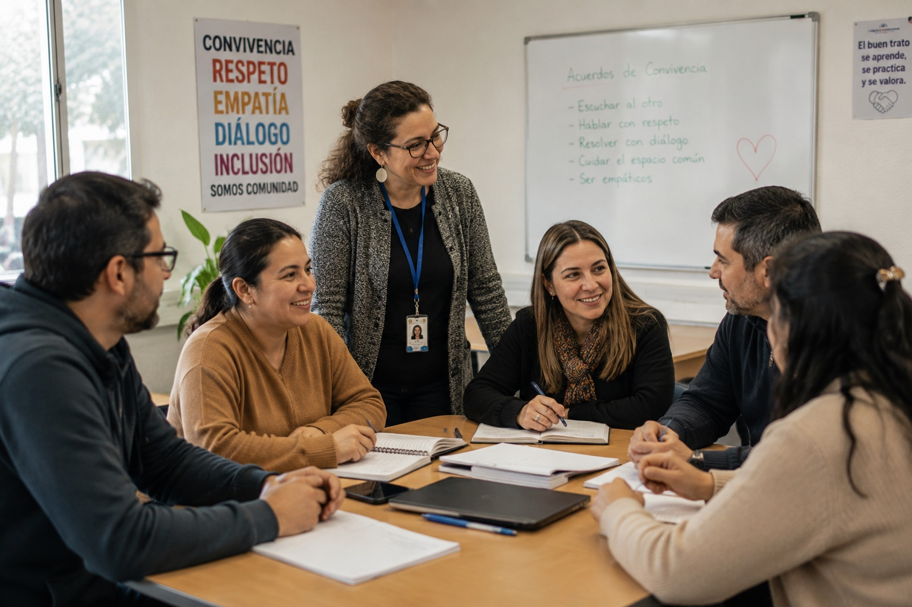
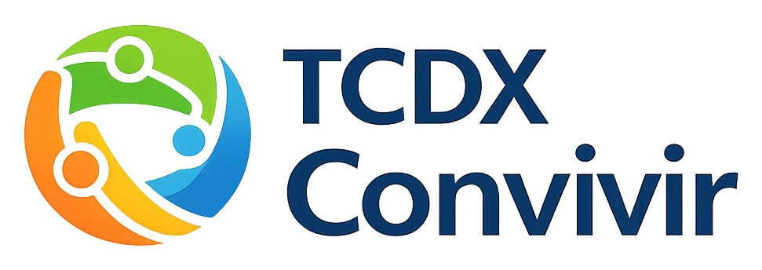
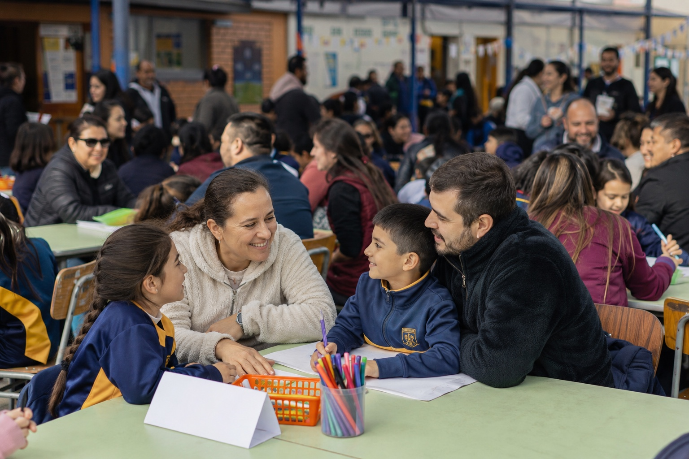

Equipos docentes coordinadosSeguimiento, acuerdos, responsables y acciones internas con trazabilidad.
TCDX Convivir centraliza incidentes, anotaciones, alertas, derivaciones, casos, formularios, evidencias y reportes internos en una plataforma segura, ordenada y diseñada para equipos de convivencia escolar.

La gestión de convivencia no ocurre solo en una oficina: conecta estudiantes, familias, docentes, equipos directivos y responsables institucionales. TCDX Convivir ordena esa operación en un sistema único.


Diseñada para apoyar la operación diaria de convivencia escolar, con flujos claros para equipos directivos, encargados de convivencia, inspectores, docentes y administración institucional.
Registro guiado de situaciones, clasificación inicial, participantes, contexto, observaciones y acciones asociadas.
Alertas operativas, asignación de responsables, derivaciones internas, seguimiento y control de vencimientos.
Apertura, clasificación, protocolo asociado, timeline, checklist de cierre, reapertura auditada y trazabilidad completa.
Vista institucional del estudiante con anotaciones, alertas, derivaciones, casos, formularios, evidencias y documentos.
Plantillas, respuestas, medios verificadores, documentos asociados y control de acceso a información sensible.
Indicadores por periodo, curso, tipo, estado y responsable para apoyar decisiones institucionales y seguimiento operativo.
TCDX Convivir ordena el ciclo completo de gestión interna, evitando registros dispersos, pérdida de evidencias y seguimiento informal de casos sensibles.
El diseño considera separación por cliente y establecimiento, control de permisos, auditoría, privacidad operacional y una API institucional para integraciones controladas.
La plataforma se presenta como herramienta de apoyo a la gestión interna de convivencia escolar. No reemplaza el criterio profesional, las obligaciones institucionales ni los protocolos oficiales de cada establecimiento.
Menos dispersión documental, mejor control de seguimiento y una vista clara del estado de cada caso.
Indicadores internos, trazabilidad por responsable y visibilidad operacional sin depender de planillas aisladas.
Administración multi-establecimiento, estándares comunes y capacidad de supervisión agregada.
Conversemos sobre cómo ordenar la gestión de convivencia escolar de tu establecimiento o red de colegios con una plataforma SaaS segura, trazable y especializada.
Contactar a TCDX